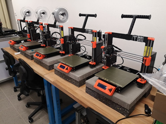
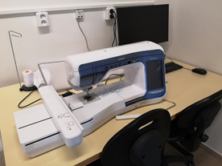
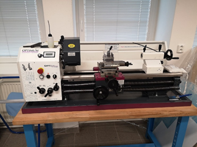
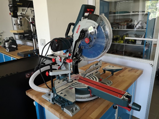
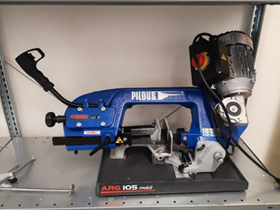
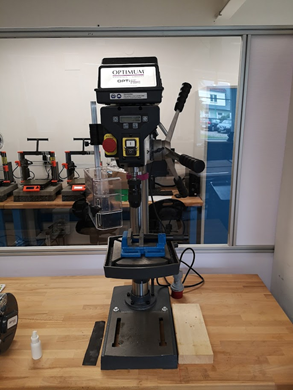
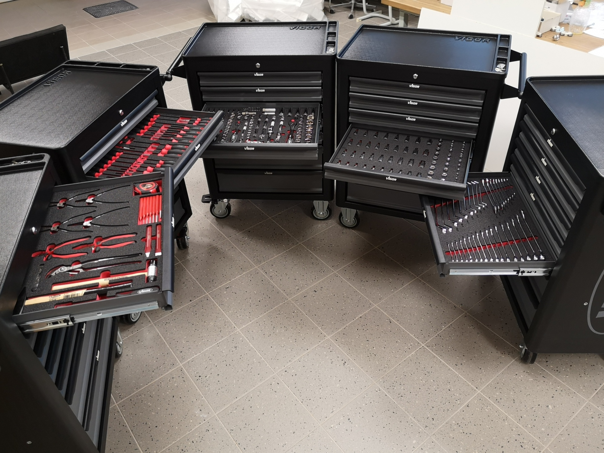
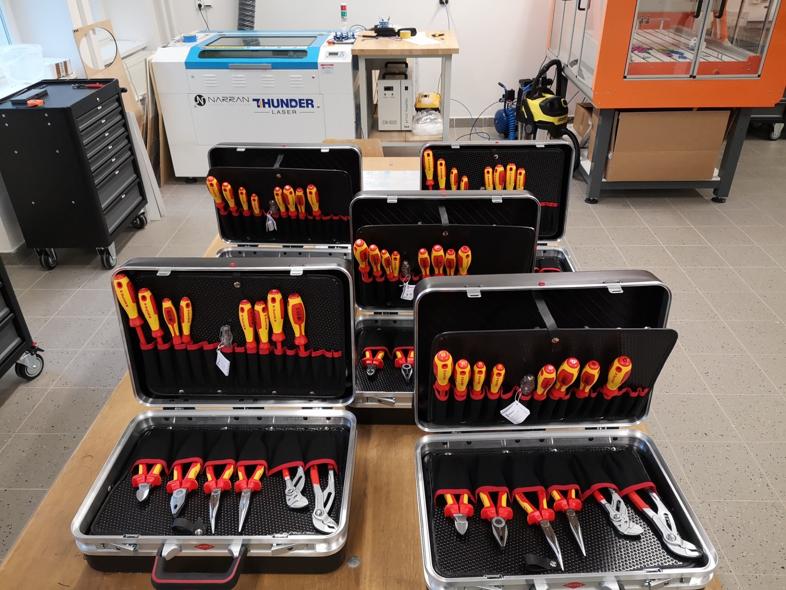
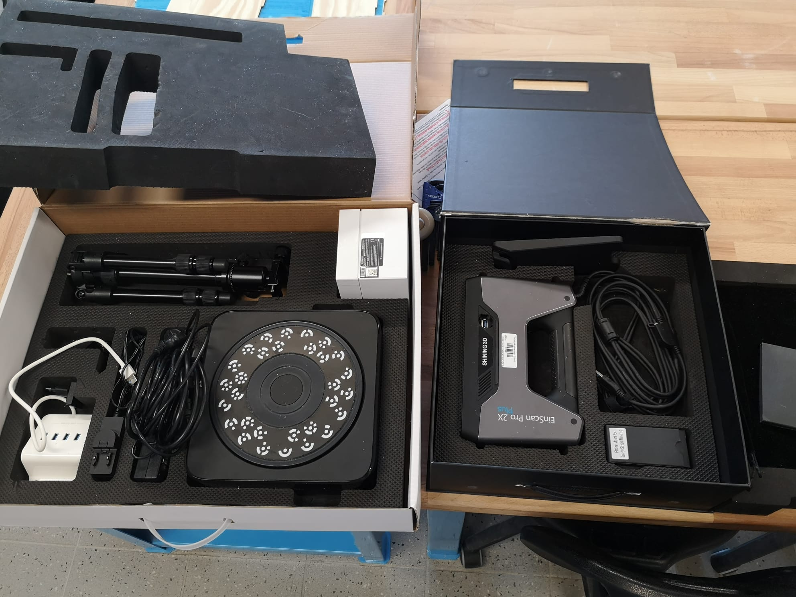
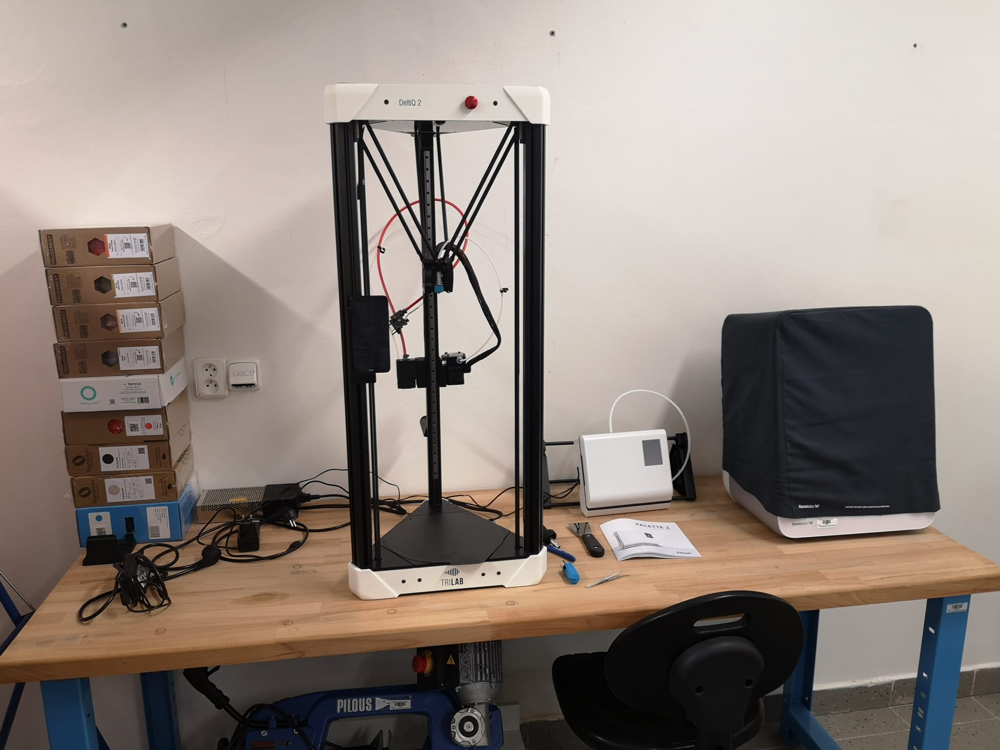

TULab
neb
„Tahle technologie mi tady chyběla!“
TULab je otevřená dílna pro všechny studenty a zaměstnance Technické univerzity v Liberci. Nabízí jim využít nebo vyzkoušet technologie, na které si ani nepomysleli. V dílně jsou k dispozici různé technologie aditivního způsobu výroby (3D tiskárny), zámečnické vybavení na postprocesing vytištěných dílů a technologie „tradiční“ neaditivní výroby (laserový plotr, CNC frézka, soustruh, různé pily, vrtačky, brusky atd.).
Kde?
Co?
Jak?
Kdy?
Kolik?
Fototůra
Řád TULabu
Kalendář akcí
Kontakt
Tipy online zdrojových dat (2D, 3D)
Online zdroje a tutoriály)
Kde se TULab nachází?
V suterénu budovy A v Hálkově ulici č. 6
Které konkrétní technologie jsou k dispozici?
3D tisk
FDM
- Original Prusa i3 MK3S+ (pracovní prostor: 250×210×210 mm)
- Trilab DeltiQ Plus (pracovní prostor: Ø 250 mm (X, Y) × 500 mm (Z))
- Creality CR-10 Max (pracovní prostor: 450×450×470 mm)
SLA
- Formlabs Form 3B (pracovní prostor: 145×145×185 mm)
- Formlabs Form 3
SLS (Sinterit Lisa PRO) (pracovní prostor: 150×200×260 mm)
Laserové řezání a gravírování
- Thunderlaser NOVA 35 CO2 100 W (řez a gravírování kartonu, dřevěných materiálů, plastových materiálů bez příměsi chloru) (pracovní prostor: 600×900×230 mm)
CNC obrábění
- Stepcraft Q204 (pracovní prostor: 800×1477×145 mm)
Automatické vyšívání a neautomatické šití
Automatické řezání
- Brother ScanNCut DX 2200D
Neautomatizované soustružení, vrtání a řezání
- Soustruh OPTiturn TU 3008
- Stojanová vrtačka OPTidrill D 23Pro
- Pokosová pila Bosch GCM 12 SDE
- Pásová pila ARG 105 mobil
3D skenovací zařízení
- EinScan Pro 2X Plus
- RangeVision Spectrum
Dílenské prostory s ručním a akumulátorovým nářadím různých druhů
A to máte kladiva, svěráky, paličky, štípačky, kombinačky, šroubováky, klíče, ráčny, voříšky, páčidla, sklíčidla, bity, nůžky, měřidla, úhelníky, pinzety, zkoušečky,
a také pily, nože, závitníky, dláta, vrtáky, sponkovačky, sekáče, vyražeče, nůžky, jehly, rašple, pilníky, kartáče,
a v neposlední řadě vrtačky, pily, brusky, frézky, horkovzdušné i lepicí pistole, svítidla.
A kdyby některé technologie chyběly, tak se nedaleko nachází Bastlírna, která je také k dispozici se svým vybavením.
A kdyby ani tam nebyly k nalezení, tak se jistě najdou společnými silami cesty, jak se k chybějícím technologiím dostat.
Jak technologie využít?
Přijít do TULabu v provozní době nebo kontaktovat některého z dílnovedoucích.
Ing. Jana Koprnického, Ph.D.: jan.koprnicky@tul.cz, tel. +420 724 160 822
nebo
Ing. Lubomíra Slavíka, Ph.D: lubomir.slavik@tul.cz, linka 3142
Provozní doba TULabu
PO–ČT 14:00–18:00
Po domluvě tulab@tul.cz jsou možné i jiné termíny
Kolik zaplatím za 3D tisk nebo použití strojů?
3D tisk (FDM): 30 Kč/h + 0,6 Kč/g (Prusa Slicer)
Laser: 6 Kč/min + 50 Kč + cena materiálu
Fotografie strojů
 
 
 

 

Řád TULabu
- Využívat služby otevřené laboratoře TULab mohou pouze registrovaní studenti/zaměstnanci, dále jen uživatelé, po seznámení s řádem TULabu a základními BOZP a PO pokyny.
- Pracovat na strojích mohou pouze registrovaní studenti/zaměstnanci, dále jen pracovníci, po absolvování školení o bezpečnosti práce.
- Uživatelé mohou využívat stroje v TULabu prostřednictvím pracovníků.
- Při pohybu i při práci je nutné dbát zvýšené opatrnosti, neboť se v prostoru nachází pracovní stroje.
- Každý́ pracovník ručí́ za pořádek v TULabu. Po ukončení práce vrátí všechna zařízení na své původní místo a uklidí své pracoviště.
- Pracovník je při odchodu povinen se ujistit, že zůstala zapnuta jen vybraná elektrická zařízení.
- Poslední odcházející pracovník zavře všechny dveře, okna a zhasne světla.
- Zásahy do softwarové výbavy počítačů v TULabu se mohou provádět pouze se svolením dílnovedoucího.
- V TULabu jsou zakázány jakékoli úpravy elektroinstalace, nábytku a vybavení.
- Každou závadu a poškození nástrojů je nutné co nejdříve nahlásit dílnovedoucímu.
- V prostorách TULabu není možné skladovat věci, na kterých není prováděna žádná práce.
Kalendář
Kontakt
E: tulab@tul.cz
W: tulab.tul.cz
T: +420 485 35 3004
Dílnovedoucí:
- Ing. Jan Koprnický, Ph.D.: jan.koprnicky@tul.cz, tel. +420 724 160 822
- Ing. Lubomír Slavík, Ph.D: lubomir.slavik@tul.cz, linka 3142
Tipy online zdrojových dat (2D, 3D)
Online zdroje (tutoriály, kalkulačky)
Prusa kalkulačka nákladů: https://blog.prusa3d.com/cs/kalkulacka-nacenovani-3d-vytisku_38905/
Tutoriál vyšívací automat (FabLab Brno): https://wiki.fablabbrno.cz/stroje/Brother-V5